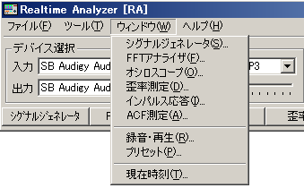
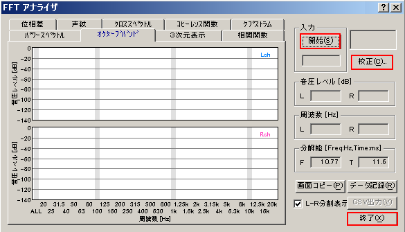

DSS3 > RA > リファレンス
キーボードショートカットの使い方
メインウインドウのメニュー項目にアルファベットが合わせて表示されている項目は、マウスを使って選択しなくてもキーボードを入力することで操作できます。これをキーボードショートカットといいます。例えば下の図では「ウインドウ」の横に（W)と表示されています。これは、ウインドウメニューを開くにはAltキーを押しながらWを押せばよいことを表しています（この操作は「Alt + W」と表記されます）。ウインドウメニューの中にある「シグナルジェネレータ（S)、FFTアナライザ（F)」等の項目は、ウインドウメニューを開いた状態で対応するアルファベットキーを押せば実行できます。

FFTアナライザやオシロスコープなど各測定ウインドウ上に配置されているボタンの横にも同じようにアルファベットが表示されているものがあります。これらのボタンを操作する場合も、対応するアルファベットキーを押せばマウスで操作するのと同じ効果が得られます。例えばFFTアナライザの場合、[S]を押せば測定開始・終了、[C]を押せば較正画面を開く、[X]を押せばFFTアナライザを終了します。

DSS3 > RA > リファレンス